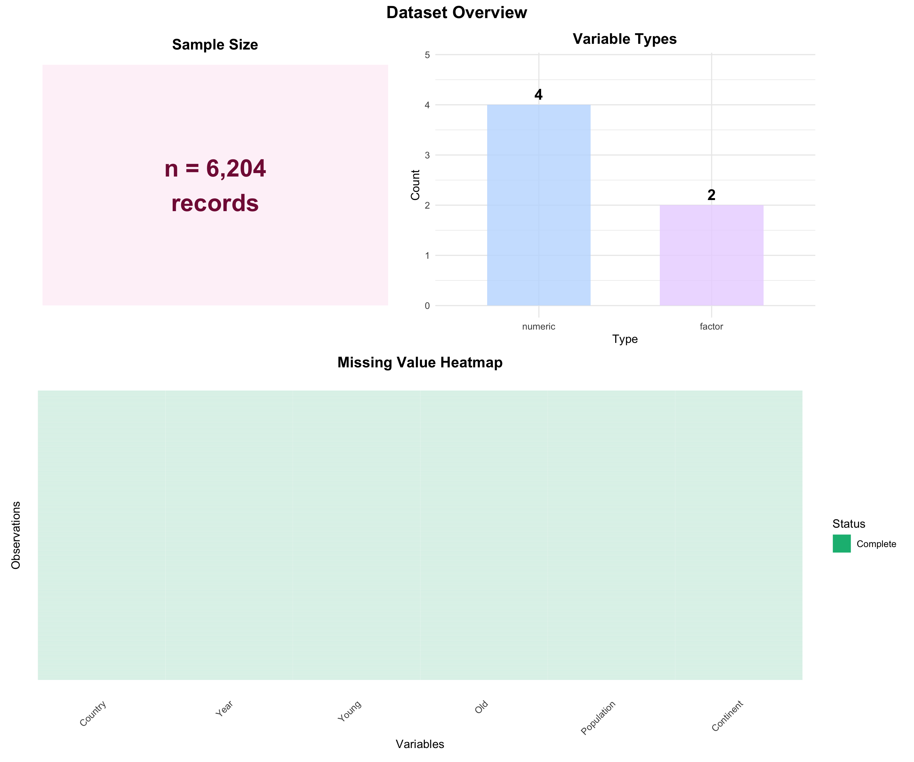

pacman::p_load(ggiraph, plotly, DT, tidyverse, readxl,
knitr, patchwork, viridis, scales)Hands-on Exercise 3
Interactive Data Visualisation — ggiraph & plotly
1 Interactive Data Visualisation: Mastering ggiraph & plotly
Welcome! Today we’ll master two powerful interactive visualization methods:
- ggiraph — ggplot2 extended with hover, click, and selection
- plotly — full-featured interactive graphics via
ggplotly()andplot_ly()
2 Getting Started
2.1 Installing Packages
2.2 Importing Data
pop_data <- read_xls("data/GlobalPopulation.xls", sheet = "Data") %>%
mutate(across(where(is.character), as.factor))3 Visual Data Exploration
Show code
n_records <- nrow(pop_data)
n_complete <- sum(complete.cases(pop_data))
var_types <- data.frame(Type = sapply(pop_data, function(x) class(x)[1])) %>%
count(Type)
p_sample <- ggplot(data.frame(x = 1, y = 1), aes(x, y)) +
geom_tile(fill = "#fce7f3", alpha = 0.5, width = 0.9, height = 0.9) +
geom_text(label = paste0("n = ", format(n_records, big.mark = ","), "\nrecords"),
size = 8, fontface = "bold", color = "#831843") +
labs(title = "Sample Size") +
theme_void() +
theme(plot.title = element_text(hjust = 0.5, face = "bold", size = 14))
p_types <- ggplot(var_types, aes(x = reorder(Type, -n), y = n, fill = Type)) +
geom_col(alpha = 0.8, width = 0.6) +
geom_text(aes(label = n), vjust = -0.5, fontface = "bold", size = 5) +
scale_fill_manual(values = c("character" = "#fbcfe8", "factor" = "#e9d5ff",
"numeric" = "#bfdbfe")) +
labs(title = "Variable Types", x = "Type", y = "Count") +
ylim(0, max(var_types$n) * 1.2) +
theme_minimal() +
theme(plot.title = element_text(hjust = 0.5, face = "bold", size = 14),
legend.position = "none")
missing_df <- reshape2::melt(is.na(pop_data))
p_missing <- ggplot(missing_df, aes(x = Var2, y = Var1, fill = value)) +
geom_tile(color = "white", linewidth = 0.05) +
scale_fill_manual(values = c("FALSE" = "#10b981", "TRUE" = "#ef4444"),
labels = c("Complete", "Missing"), name = "Status") +
labs(title = "Missing Value Heatmap", x = "Variables", y = "Observations") +
theme_minimal() +
theme(plot.title = element_text(hjust = 0.5, face = "bold", size = 14),
axis.text.y = element_blank(),
axis.ticks.y = element_blank(),
axis.text.x = element_text(angle = 45, hjust = 1),
panel.grid = element_blank())
(p_sample | p_types) / p_missing +
plot_annotation(title = "Dataset Overview",
theme = theme(plot.title = element_text(size = 16, face = "bold", hjust = 0.5))) +
plot_layout(heights = c(1, 1.2))
NoteAnalysis
The dataset has 6,204 records with 2 categorical and 4 numeric variables. The heatmap reveals where missing values cluster, guiding data-cleaning priorities before analysis.
Show code
cat_vars <- names(pop_data)[sapply(pop_data, function(x) is.character(x) || is.factor(x))]
pastel_colors <- c("#fbcfe8","#bfdbfe","#bbf7d0","#e9d5ff","#fde68a","#fecaca","#a7f3d0","#ddd6fe")
plot_list <- lapply(cat_vars, function(var) {
plot_data <- pop_data %>%
group_by(.data[[var]]) %>%
summarise(n = n(), .groups = "drop") %>%
mutate(pct = n / sum(n) * 100) %>%
arrange(desc(n))
n_cats <- nrow(plot_data)
fill_colors <- rep_len(pastel_colors, n_cats)
title_suffix <- if (n_cats > 20) { plot_data <- slice_head(plot_data, n = 20); " (Top 20)" } else ""
ggplot(plot_data, aes(x = reorder(.data[[var]], -n), y = n, fill = .data[[var]])) +
geom_col(alpha = 0.9, width = 0.7, color = "white") +
geom_text(aes(label = paste0(n, "\n(", round(pct,1), "%)")),
vjust = -0.2, size = 2.5, fontface = "bold", color = "#831843") +
scale_fill_manual(values = fill_colors) +
labs(title = paste(var, "Distribution", title_suffix), y = "Count", x = "") +
ylim(0, max(plot_data$n) * 1.15) +
theme_minimal(base_size = 10) +
theme(plot.title = element_text(hjust = 0.5, face = "bold", size = 11),
legend.position = "none",
axis.text.x = element_text(angle = 45, hjust = 1, size = 7))
})
wrap_plots(plot_list, ncol = 2) +
plot_annotation(title = "Categorical Variable Distributions",
theme = theme(plot.title = element_text(size = 13, face = "bold", hjust = 0.5)))
NoteAnalysis
Always group_by before counting to get true frequencies per category. Africa has the most countries while Asia dominates by total population — a distinction only visible after proper grouping.
Show code
latest_year <- max(pop_data$Year, na.rm = TRUE)
example_country <- pop_data %>% filter(Country == "China") %>% arrange(Year)
v1 <- pop_data %>% filter(Year == latest_year) %>%
ggplot(aes(x = Young, y = Population, size = Population, color = Continent)) +
geom_point(alpha = 0.6) +
scale_size_continuous(range = c(2, 15)) +
scale_color_viridis_d(option = "plasma") +
labs(title = "Q1: Young vs Population", x = "Young Population", y = "Total Population") +
theme_minimal() + theme(plot.title = element_text(face = "bold"))
v2 <- ggplot(example_country, aes(x = Year, y = Old)) +
geom_line(color = "#ec4899", linewidth = 1.2) + geom_point(color = "#831843", size = 3) +
labs(title = "Q2: China — Aging Trend", x = "Year", y = "Old Population") +
theme_minimal() + theme(plot.title = element_text(face = "bold"))
v3 <- ggplot(example_country, aes(x = Year, y = Young)) +
geom_line(color = "#3b82f6", linewidth = 1.2) + geom_point(color = "#1e40af", size = 3) +
labs(title = "Q3: China — Youth Trend", x = "Year", y = "Young Population") +
theme_minimal() + theme(plot.title = element_text(face = "bold"))
v4 <- pop_data %>% filter(Year == latest_year) %>%
ggplot(aes(x = Young, y = Old, color = Continent)) +
geom_point(alpha = 0.7, size = 3) +
scale_color_viridis_d(option = "turbo") +
labs(title = "Q4: Young vs Old by Continent", x = "Young Population", y = "Old Population") +
theme_minimal() + theme(legend.position = "right", plot.title = element_text(face = "bold"))
(v1 | v2) / (v3 | v4) +
plot_annotation(title = "Understanding Data Relationships",
theme = theme(plot.title = element_text(size = 16, face = "bold", hjust = 0.5)))
ImportantAnalysis
Each chart type matches the analytical question: bubble charts encode three variables at once; line charts trace temporal change; scatter plots expose bivariate structure. The pairing of Q2 and Q3 tells China’s full demographic story — a rising elderly share alongside a plateauing youth share signals a structural squeeze that no single chart alone could reveal.
Show code
glimpse(pop_data)Rows: 6,204
Columns: 6
$ Country <fct> "Afghanistan", "Afghanistan", "Afghanistan", "Afghanistan",…
$ Year <dbl> 1996, 1998, 2000, 2002, 2004, 2006, 2008, 2010, 2012, 2014,…
$ Young <dbl> 83.6, 84.1, 84.6, 85.1, 84.5, 84.3, 84.1, 83.7, 82.9, 82.1,…
$ Old <dbl> 4.5, 4.5, 4.5, 4.5, 4.5, 4.6, 4.6, 4.6, 4.6, 4.7, 4.7, 4.7,…
$ Population <dbl> 21559.9, 22912.8, 23898.2, 25268.4, 28513.7, 31057.0, 32738…
$ Continent <fct> Asia, Asia, Asia, Asia, Asia, Asia, Asia, Asia, Asia, Asia,…Show code
summary(pop_data %>% select(where(is.numeric))) Year Young Old Population
Min. :1996 Min. : 15.50 Min. : 1.00 Min. : 3.3
1st Qu.:2010 1st Qu.: 25.70 1st Qu.: 6.90 1st Qu.: 605.9
Median :2024 Median : 34.30 Median :12.80 Median : 5771.6
Mean :2023 Mean : 41.66 Mean :17.93 Mean : 34860.9
3rd Qu.:2038 3rd Qu.: 53.60 3rd Qu.:25.90 3rd Qu.: 22711.0
Max. :2050 Max. :109.20 Max. :77.10 Max. :1807878.6
NoteAnalysis
glimpse() quickly confirms variable types and detects encoding issues; summary() exposes range and quartile information in one step, flagging extreme values before visualisation begins.
4 Part 1: ggiraph Methods
TipCore Concept
ggiraph adds interactivity to ggplot2 via three aesthetics: tooltip (hover text), data_id (selection linking), and onclick (click action). Workflow: swap geom_* → geom_*_interactive, then wrap in girafe().
4.1 Basic Tooltip Interactivity
Show code
p <- pop_data %>%
filter(Year == max(Year, na.rm = TRUE)) %>%
ggplot(aes(x = Young, y = Population, color = Continent)) +
geom_point_interactive(
aes(tooltip = paste0("<b>", Country, "</b><br>",
"Continent: ", Continent, "<br>",
"Young: ", format(Young, big.mark = ","), "<br>",
"Population: ", format(Population, big.mark = ","))),
size = 3, alpha = 0.7
) +
scale_color_viridis_d(option = "plasma") +
labs(title = "Young vs Population — Interactive Tooltip",
x = "Young Population", y = "Total Population") +
theme_minimal() + theme(plot.title = element_text(face = "bold", size = 14))
girafe(ggobj = p, width_svg = 10, height_svg = 5)
NoteAnalysis & Technique
Replacing geom_point() with geom_point_interactive() and wrapping in girafe() is the minimum change needed for hover interactivity. Hovering over any point instantly reveals country-level detail without cluttering the chart — far more informative than static labels.
4.2 Tooltip Styling and Data ID
Show code
p <- pop_data %>%
filter(Year == max(Year, na.rm = TRUE)) %>%
ggplot(aes(x = Young, y = Old, color = Continent)) +
geom_point_interactive(
aes(tooltip = paste0("<b>", Country, "</b><br>",
"Continent: ", Continent, "<br>",
"Young: ", format(Young, big.mark = ","), "<br>",
"Old: ", format(Old, big.mark = ",")),
data_id = Country),
size = 3.5, alpha = 0.7
) +
scale_color_viridis_d(option = "turbo") +
labs(title = "Young vs Old — Click to Select Countries",
x = "Young Population", y = "Old Population") +
theme_minimal() + theme(plot.title = element_text(face = "bold", size = 14))
girafe(ggobj = p,
width_svg = 10, height_svg = 5,
options = list(
opts_hover(css = "fill:#FF3333;stroke:#FF3333;cursor:pointer;"),
opts_selection(type = "single",
css = "fill:#FF3333;stroke:#000000;stroke-width:2px;")
))
NoteAnalysis & Technique
data_id assigns each point a unique key used for hover and selection linking. opts_hover() and opts_selection() apply CSS directly to SVG elements, enabling a red-highlight effect without any JavaScript. Click a country to lock the selection; click again to release.
4.3 Hover Effect Styling
Show code
p <- pop_data %>%
filter(Year == max(Year, na.rm = TRUE)) %>%
ggplot(aes(x = Young, y = Population, color = Continent)) +
geom_point_interactive(
aes(tooltip = paste0("<b style='color:#831843;'>", Country, "</b><br>",
"<span style='color:#1e40af;'>Young: ",
format(Young, big.mark = ","), "</span><br>",
"<span style='color:#059669;'>Population: ",
format(Population, big.mark = ","), "</span>"),
data_id = Country),
size = 3, alpha = 0.7
) +
scale_color_viridis_d(option = "plasma") +
labs(title = "Young vs Population — Styled Tooltips",
x = "Young Population", y = "Total Population") +
theme_minimal() + theme(plot.title = element_text(face = "bold", size = 14))
girafe(ggobj = p,
width_svg = 10, height_svg = 5,
options = list(
opts_hover(css = "fill:#FFD700;stroke:#FF6347;stroke-width:3px;r:6px;"),
opts_tooltip(css = "background-color:#f8f9fa;padding:10px;border-radius:5px;
box-shadow:0 0 10px rgba(0,0,0,0.3);")
))
NoteAnalysis & Technique
Inline HTML/CSS inside the tooltip string and opts_tooltip() CSS together produce presentation-quality popups. The gold glow on hover draws the eye and signals interactivity — small details that matter in stakeholder demos.
4.4 Onclick Actions — External Links
Show code
pop_search <- pop_data %>%
filter(Year == max(Year, na.rm = TRUE)) %>%
mutate(search_url = paste0(
"window.open('https://www.google.com/search?q=",
URLencode(paste(as.character(Country), "population statistics")), "')"
))
p <- ggplot(pop_search, aes(x = Young, y = Population, color = Continent)) +
geom_point_interactive(
aes(tooltip = paste0("<b>", Country, "</b><br>Click to search Google"),
onclick = search_url,
data_id = Country),
size = 3.5, alpha = 0.7
) +
scale_color_viridis_d(option = "plasma") +
labs(title = "Click Points to Search Google",
subtitle = "Interactive: click any country point",
x = "Young Population", y = "Total Population") +
theme_minimal() + theme(plot.title = element_text(face = "bold", size = 14))
girafe(ggobj = p,
width_svg = 10, height_svg = 5,
options = list(opts_hover(css = "fill:#FF3333;cursor:pointer;")))
NoteAnalysis & Technique
The onclick aesthetic accepts any JavaScript expression. Here it opens a Google search for the selected country, bridging the visualisation to external information — useful for exploratory research dashboards where users need context beyond the chart itself.
4.5 Coordinated Multiple Views
Show code
latest <- pop_data %>% filter(Year == max(Year, na.rm = TRUE))
p1 <- ggplot(latest, aes(x = Young, y = Population, color = Continent)) +
geom_point_interactive(
aes(tooltip = paste0("<b>", Country, "</b><br>Continent: ", Continent,
"<br>Young: ", format(Young, big.mark=","),
"<br>Total Pop: ", format(Population, big.mark=",")),
data_id = Country),
size = 3, alpha = 0.7) +
scale_color_viridis_d(option = "plasma") +
labs(title = "Young vs Total Population",
x = "Young Population", y = "Total Population") +
theme_minimal() +
theme(legend.position = "right",
plot.title = element_text(face = "bold", size = 11))
p2 <- ggplot(latest, aes(x = Young, y = Old, color = Continent)) +
geom_point_interactive(
aes(tooltip = paste0("<b>", Country, "</b><br>Continent: ", Continent,
"<br>Young: ", format(Young, big.mark=","),
"<br>Old: ", format(Old, big.mark=",")),
data_id = Country),
size = 3, alpha = 0.7) +
scale_color_viridis_d(option = "turbo") +
labs(title = "Young vs Old Population",
x = "Young Population", y = "Old Population") +
theme_minimal() +
theme(legend.position = "right",
plot.title = element_text(face = "bold", size = 11))
continent_pop <- latest %>%
group_by(Continent) %>%
summarise(total_pop = sum(Population, na.rm=TRUE),
n_countries = n(), .groups = "drop") %>%
arrange(desc(total_pop))
p3 <- ggplot(continent_pop, aes(x = reorder(Continent, -total_pop),
y = total_pop, fill = Continent)) +
geom_col_interactive(
aes(tooltip = paste0("<b>", Continent, "</b><br>",
"Total Pop: ", format(total_pop, big.mark=","),
"<br>Countries: ", n_countries),
data_id = Continent),
alpha = 0.85, width = 0.7) +
scale_fill_viridis_d(option = "plasma") +
scale_y_continuous(labels = scales::comma) +
labs(title = "Total Population by Continent", x = "", y = "Total Population") +
theme_minimal() +
theme(legend.position = "none",
axis.text.x = element_text(angle = 45, hjust = 1),
plot.title = element_text(face = "bold", size = 11))
continent_count <- latest %>% group_by(Continent) %>% summarise(n = n(), .groups = "drop")
p4 <- ggplot(continent_count, aes(x = reorder(Continent, -n), y = n, fill = Continent)) +
geom_col_interactive(
aes(tooltip = paste0("<b>", Continent, "</b><br>", n, " countries"),
data_id = Continent),
alpha = 0.85, width = 0.7) +
scale_fill_viridis_d(option = "turbo") +
labs(title = "Number of Countries by Continent", x = "", y = "Number of Countries") +
theme_minimal() +
theme(legend.position = "none",
axis.text.x = element_text(angle = 45, hjust = 1),
plot.title = element_text(face = "bold", size = 11))
girafe(
ggobj = (p1 | p2) / (p3 | p4),
width_svg = 14,
height_svg = 9,
options = list(
opts_hover(css = "fill:#FF3333;stroke:#FF3333;stroke-width:2px;"),
opts_selection(type = "single",
css = "fill:#FF3333;stroke:#000000;stroke-width:3px;"),
opts_sizing(rescale = TRUE)
)
)
ImportantAnalysis & Technique
Coordinated views work because every plot shares the same data_id values (Country or Continent). When you click a point in one panel, ggiraph highlights the matching element across all four panels simultaneously — no JavaScript required. Combine with patchwork inside girafe() to activate this cross-panel linking. A single click on China, for example, reveals its position in the Young–Population space, its age structure, and Asia’s continental totals all at once — insight that would require mentally tracking four separate charts otherwise.
5 Part 2: plotly — ggplotly() Method
TipCore Concept
ggplotly() converts any ggplot2 object into a fully interactive plotly chart — zoom, pan, download, and tooltips are added automatically. Minimal code change required.
5.1 Basic ggplotly() Conversion
Show code
p <- pop_data %>%
filter(Year == max(Year, na.rm = TRUE)) %>%
ggplot(aes(x = Young, y = Population, color = Continent)) +
geom_point(alpha = 0.6, size = 3) +
scale_color_viridis_d(option = "plasma") +
labs(title = "Young vs Population (ggplotly)",
x = "Young Population", y = "Total Population") +
theme_minimal() + theme(plot.title = element_text(face = "bold"))
ggplotly(p)
NoteAnalysis & Technique
One function call transforms a static chart into a fully interactive one with a zoom toolbar, pan, and reset. Default tooltips show x, y, and colour — no extra code. Best entry point when you already have a ggplot pipeline.
5.2 Custom Tooltips with ggplotly()
Show code
p_custom <- pop_data %>%
filter(Year == max(Year, na.rm = TRUE)) %>%
mutate(tooltip_text = paste0(
"<b>", Country, "</b><br>",
"Continent: ", Continent, "<br>",
"Young: ", format(Young, big.mark=","), "<br>",
"Population: ", format(Population, big.mark=",")
)) %>%
ggplot(aes(x = Young, y = Population, color = Continent, text = tooltip_text)) +
geom_point(alpha = 0.7, size = 3) +
scale_color_viridis_d(option = "plasma") +
labs(title = "Young vs Population — Custom Tooltips",
x = "Young Population", y = "Total Population") +
theme_minimal() + theme(plot.title = element_text(face = "bold"))
ggplotly(p_custom, tooltip = "text")
NoteAnalysis & Technique
Map HTML-formatted text to the text aesthetic, then pass tooltip = "text" to ggplotly() to suppress the default coordinates in favour of your custom popup. This gives stakeholder-quality context (country name, continent, formatted values) without rebuilding the chart in native plotly syntax.
5.3 Faceted Interactive Plots
Show code
p_facet <- pop_data %>%
filter(Year == max(Year, na.rm = TRUE)) %>%
mutate(tooltip = paste0("<b>", Country, "</b><br>",
"Young: ", format(Young, big.mark=","), "<br>",
"Old: ", format(Old, big.mark=","))) %>%
ggplot(aes(x = Young, y = Old, color = Continent, text = tooltip)) +
geom_point(alpha = 0.7, size = 3) +
facet_wrap(~Continent, scales = "free") +
scale_color_viridis_d(option = "turbo") +
labs(title = "Young vs Old by Continent (Faceted)",
x = "Young Population", y = "Old Population") +
theme_minimal() +
theme(legend.position = "none",
strip.background = element_rect(fill = "#fbcfe8", color = "#831843"),
plot.title = element_text(face = "bold"))
ggplotly(p_facet, tooltip = "text")
NoteAnalysis & Technique
ggplotly() preserves the facet_wrap layout, giving each continent its own zoomable panel. Free scales let continent-specific variation show clearly — Asia’s massive range would otherwise crush smaller continents. Each panel is independently interactive, enabling focused within-group exploration.
6 Part 3: plotly — plot_ly() Method
TipCore Concept
plot_ly() is plotly’s native R syntax. Use tilde (~) notation to reference columns. Preferred when you need multi-trace comparisons, log axes, or annotations not easily replicated via ggplotly().
6.1 Basic plot_ly() — Line Chart
Show code
aging_data <- pop_data %>% filter(Country == "China") %>% arrange(Year)
plot_ly(data = aging_data,
x = ~Year, y = ~Old,
type = "scatter", mode = "lines+markers",
line = list(color = "#ec4899", width = 3),
marker = list(size = 8, color = "#831843"),
text = ~paste0("Year: ", Year, "<br>Old Pop: ", format(Old, big.mark=",")),
hoverinfo = "text",
name = "Old Population") %>%
layout(
title = list(text = "<b>China: Aging Trend Over Time</b>", font = list(size = 16)),
xaxis = list(title = "Year"),
yaxis = list(title = "Old Population"),
plot_bgcolor = "#fdf2f8",
hovermode = "x"
)
NoteAnalysis & Technique
plot_ly() uses a pipe-friendly builder pattern. type = "scatter" + mode = "lines+markers" produces a connected line chart. The hovermode = "x" snaps the tooltip to the nearest x-value, making it easy to read exact values at each year without precise cursor positioning.
6.2 Multi-Trace Comparison
Show code
trend_data <- pop_data %>% filter(Country == "China") %>% arrange(Year)
plot_ly(data = trend_data) %>%
add_trace(x = ~Year, y = ~Old,
type = "scatter", mode = "lines+markers",
name = "Old Population",
line = list(color = "#ec4899", width = 2.5),
marker = list(size = 7, color = "#831843"),
text = ~paste0("Year: ", Year, "<br>Old: ", format(Old, big.mark=",")),
hoverinfo = "text") %>%
add_trace(x = ~Year, y = ~Young,
type = "scatter", mode = "lines+markers",
name = "Young Population",
line = list(color = "#3b82f6", width = 2.5),
marker = list(size = 7, color = "#1e40af"),
text = ~paste0("Year: ", Year, "<br>Young: ", format(Young, big.mark=",")),
hoverinfo = "text") %>%
layout(
title = list(text = "<b>China: Young vs Old Population Trends</b>", font = list(size = 16)),
xaxis = list(title = "Year"),
yaxis = list(title = "Population"),
hovermode = "x unified",
plot_bgcolor = "#fdf2f8",
legend = list(x = 0.7, y = 0.95)
)
ImportantAnalysis & Technique
add_trace() layers multiple series on shared axes; hovermode = "x unified" shows both values in one tooltip at each year, making the divergence (Old rising, Young plateauing) immediately quantifiable. Click the legend items to toggle either trace — useful for comparing trajectories in isolation. This two-line view of China’s demographic squeeze would require mental arithmetic across separate charts without multi-trace.
6.3 Advanced Bubble Chart with Annotations
Show code
latest_data <- pop_data %>% filter(Year == max(Year, na.rm = TRUE))
centroids <- latest_data %>%
group_by(Continent) %>%
summarise(mean_young = mean(Young, na.rm=TRUE),
mean_pop = mean(Population, na.rm=TRUE),
n = n(), .groups = "drop")
plot_ly() %>%
add_trace(
data = latest_data,
x = ~Young, y = ~Population,
type = "scatter", mode = "markers",
color = ~Continent,
colors = viridis::viridis(length(unique(latest_data$Continent))),
marker = list(
size = ~scales::rescale(log(Population + 1), to = c(8, 25)),
sizemode = "diameter",
opacity = 0.6,
line = list(width = 1, color = "#ffffff")
),
text = ~paste0("<b>", Country, "</b><br>Continent: ", Continent,
"<br>Young: ", format(Young, big.mark=","),
"<br>Population: ", format(Population, big.mark=",")),
hoverinfo = "text",
showlegend = TRUE
) %>%
add_annotations(
data = centroids,
x = ~mean_young, y = ~mean_pop,
text = ~paste0("<b>", Continent, "</b><br>(n=", n, ")"),
showarrow = FALSE,
font = list(size = 11, color = "#831843", family = "Arial Black"),
bgcolor = "#ffffff",
bordercolor = "#831843",
borderwidth = 2
) %>%
layout(
title = list(text = "<b>Young vs Population — Continental Patterns</b>",
font = list(size = 16)),
xaxis = list(title = "Young Population"),
yaxis = list(title = "Total Population (log scale)", type = "log"),
plot_bgcolor = "#fdf2f8"
)
ImportantAnalysis & Technique
add_annotations() overlays continent centroid labels directly on the scatter cloud, adding a summary layer without a separate legend. Log-scale Y-axis prevents China and India from compressing all other countries into a narrow band at the bottom. Together, bubble size (population), colour (continent), and centroid labels create a four-variable display that reveals both individual outliers and continental trends in a single view.
7 Part 4: Interactive Tables with DT
TipCore Concept
The DT package renders R data frames as searchable, sortable, filterable HTML tables with optional export buttons and conditional formatting.
7.1 Basic Interactive Table
Show code
datatable(
pop_data %>% filter(Year == max(Year, na.rm = TRUE)),
caption = "Latest Year Population Data",
filter = "top",
options = list(pageLength = 10, scrollX = TRUE,
order = list(list(4, "desc"))),
rownames = FALSE
)
NoteAnalysis & Technique
filter = "top" adds per-column text boxes for precise filtering; order sets a default sort. DT lets users interrogate exact values that visualisations generalise over — tables and charts are complements, not substitutes.
7.2 Styled Table with Conditional Formatting
Show code
summary_table <- pop_data %>%
filter(Year == max(Year, na.rm = TRUE)) %>%
select(Country, Continent, Population, Young, Old) %>%
arrange(desc(Population)) %>%
head(50)
datatable(
summary_table,
caption = "Top 50 Countries by Population",
filter = "top",
extensions = "Buttons",
options = list(
pageLength = 15, scrollX = TRUE,
dom = "Bfrtip",
buttons = c("copy", "csv", "excel", "pdf"),
initComplete = JS(
"function(settings, json) {",
"$(this.api().table().header()).css({'background-color':'#fbcfe8','color':'#831843','font-weight':'bold'});",
"}"
)
),
rownames = FALSE
) %>%
formatStyle(
"Population",
background = styleColorBar(range(summary_table$Population, na.rm=TRUE), "#bfdbfe"),
backgroundSize = "100% 90%",
backgroundRepeat = "no-repeat",
backgroundPosition = "center"
) %>%
formatStyle(
"Young",
background = styleInterval(
quantile(summary_table$Young, probs = c(0.33, 0.67), na.rm=TRUE),
values = c("#bbf7d0", "#fde68a", "#fbcfe8")
)
) %>%
formatStyle(
"Old",
background = styleInterval(
quantile(summary_table$Old, probs = c(0.33, 0.67), na.rm=TRUE),
values = c("#e0f2fe", "#fef3c7", "#fecaca")
)
) %>%
formatRound(columns = c("Population", "Young", "Old"), digits = 1)
ImportantAnalysis & Technique
styleColorBar() encodes Population as an in-cell bar chart for quick magnitude scanning; styleInterval() applies traffic-light colours by tertile for Young and Old, making outliers pop without any mental arithmetic. Export buttons (CSV/Excel/PDF) close the loop between exploration and reporting.
8 Part 5: Coordinated Dashboard (ggiraph)
Instead of independent plotly subplots, this dashboard uses ggiraph coordinated views so that hovering or clicking any element highlights its counterpart across all four panels simultaneously.
Show code
latest <- pop_data %>% filter(Year == max(Year, na.rm = TRUE))
# --- Panel A: Young vs Population (scatter) ---
pA <- ggplot(latest, aes(x = Young, y = Population, color = Continent)) +
geom_point_interactive(
aes(tooltip = paste0("<b>", Country, "</b><br>",
"Continent: ", Continent, "<br>",
"Young: ", format(Young, big.mark=","), "<br>",
"Population: ", format(Population, big.mark=",")),
data_id = Country),
size = 3, alpha = 0.7) +
scale_color_viridis_d(option = "plasma") +
labs(title = "A — Young vs Population",
x = "Young Population", y = "Total Population") +
theme_minimal() +
theme(legend.position = "none",
plot.title = element_text(face = "bold", size = 11))
# --- Panel B: Young vs Old (scatter) ---
pB <- ggplot(latest, aes(x = Young, y = Old, color = Continent)) +
geom_point_interactive(
aes(tooltip = paste0("<b>", Country, "</b><br>",
"Young: ", format(Young, big.mark=","), "<br>",
"Old: ", format(Old, big.mark=",")),
data_id = Country),
size = 3, alpha = 0.7) +
scale_color_viridis_d(option = "turbo") +
labs(title = "B — Young vs Old",
x = "Young Population", y = "Old Population") +
theme_minimal() +
theme(legend.position = "none",
plot.title = element_text(face = "bold", size = 11))
# --- Panel C: Young distribution (histogram) ---
# Bin data manually so we can attach data_id per country via dot-strip overlay
pC <- ggplot(latest, aes(x = Young)) +
geom_histogram_interactive(
aes(tooltip = paste0("Young range bin<br>Count: ", after_stat(count)),
data_id = after_stat(as.character(round(x, -3)))),
bins = 25,
fill = "#bfdbfe", color = "#1e40af", alpha = 0.8
) +
geom_point_interactive(
aes(y = 0, tooltip = paste0("<b>", Country, "</b><br>Young: ",
format(Young, big.mark=",")),
data_id = Country),
position = position_jitter(width = 0, height = 0.3),
size = 1.5, alpha = 0.4, color = "#831843"
) +
labs(title = "C — Young Distribution",
x = "Young Population", y = "Count") +
theme_minimal() +
theme(plot.title = element_text(face = "bold", size = 11))
# --- Panel D: Old distribution (histogram) ---
pD <- ggplot(latest, aes(x = Old)) +
geom_histogram_interactive(
aes(tooltip = paste0("Old range bin<br>Count: ", after_stat(count)),
data_id = after_stat(as.character(round(x, -3)))),
bins = 25,
fill = "#fbcfe8", color = "#831843", alpha = 0.8
) +
geom_point_interactive(
aes(y = 0, tooltip = paste0("<b>", Country, "</b><br>Old: ",
format(Old, big.mark=",")),
data_id = Country),
position = position_jitter(width = 0, height = 0.3),
size = 1.5, alpha = 0.4, color = "#1e40af"
) +
labs(title = "D — Old Distribution",
x = "Old Population", y = "Count") +
theme_minimal() +
theme(plot.title = element_text(face = "bold", size = 11))
# Combine all four panels inside girafe for coordinated linking
girafe(
ggobj = (pA | pB) / (pC | pD),
width_svg = 14,
height_svg = 9,
options = list(
opts_hover(css = "fill:#FF3333;stroke:#FF3333;stroke-width:2px;opacity:1;"),
opts_selection(type = "single",
css = "fill:#FF3333;stroke:#000000;stroke-width:3px;opacity:1;"),
opts_sizing(rescale = TRUE),
opts_tooltip(css = "background:#fff;padding:8px;border-radius:4px;
border:1px solid #ccc;font-size:12px;")
)
)
ImportantAnalysis & Technique
This dashboard replaces independent plotly subplots with a single ggiraph canvas containing four panels bound by shared data_id keys. Selecting any country in Panel A or B immediately highlights the same country’s dot in Panels C and D, showing exactly where it sits in the Young and Old distributions — no manual cross-referencing needed. Panels C and D pair jittered dots (one per country, coordinated) with histogram bars for distribution context, giving both aggregate shape and individual country position in the same view. The design principle: scatter plots reveal relationships, histograms reveal distributions — together they deliver a complete statistical picture of global demographic structure.